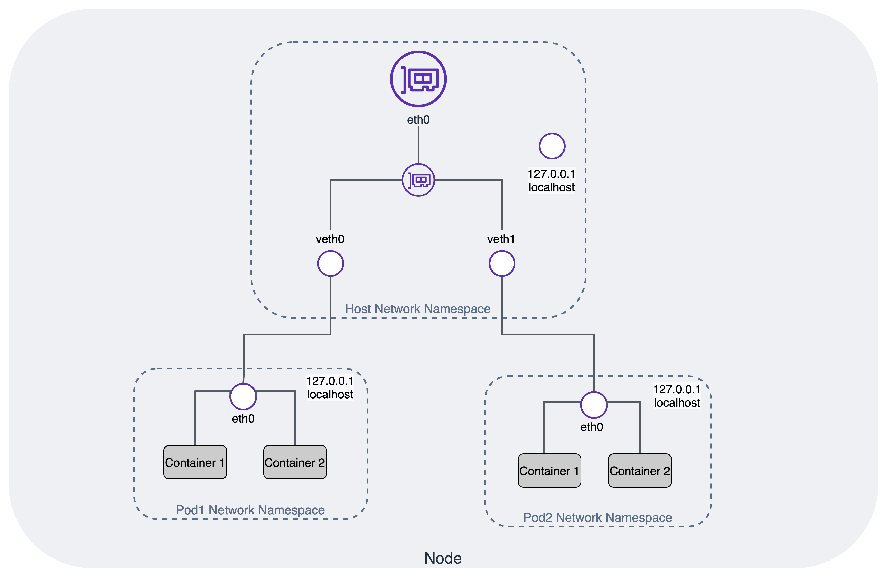

Amazon EKS 网络最佳实践指南¶
了解 Kubernetes 网络对于高效运行集群和应用程序至关重要。Pod 网络(也称为集群网络)是 Kubernetes 网络的核心。Kubernetes 支持 Container Network Interface (CNI) 插件用于集群网络。
Amazon EKS 官方支持 Amazon Virtual Private Cloud (VPC) CNI 插件来实现 Kubernetes Pod 网络。VPC CNI 提供与 AWS VPC 的本地集成，并以底层模式工作。在底层模式下，Pod 和主机位于同一网络层，并共享网络命名空间。从集群和 VPC 的角度来看，Pod 的 IP 地址是一致的。
本指南介绍了 Amazon VPC Container Network Interface(VPC CNI) 在 Kubernetes 集群网络的上下文中。VPC CNI 是 EKS 支持的默认网络插件，因此是本指南的重点。VPC CNI 可高度配置以支持不同的用例。本指南还包括关于不同 VPC CNI 用例、操作模式、子组件的专门部分，以及相关建议。
Amazon EKS 运行上游 Kubernetes 并通过了 Kubernetes 一致性认证。尽管您可以使用替代 CNI 插件，但本指南不提供管理替代 CNI 的建议。请查看 EKS 替代 CNI 文档，了解合作伙伴列表和有效管理替代 CNI 的资源。
Kubernetes 网络模型¶
Kubernetes 对集群网络提出以下要求：
- 在同一节点上调度的 Pod 必须能够在不使用 NAT (网络地址转换) 的情况下与其他 Pod 通信。
- 运行在特定节点上的所有系统守护进程 (例如后台进程 kubelet) 都可以与运行在同一节点上的 Pod 通信。
- 使用 host network 的 Pod 必须能够在不使用 NAT 的情况下与所有其他节点上的所有其他 Pod 联系。
有关 Kubernetes 对兼容网络实现的期望，请参阅 Kubernetes 网络模型。下图说明了 Pod 网络命名空间与主机网络命名空间之间的关系。

容器网络接口 (CNI)¶
Kubernetes 支持 CNI 规范和插件来实现 Kubernetes 网络模型。CNI 由一个 规范 (当前版本为 1.0.0) 和用于编写插件以配置容器中网络接口的库组成，以及许多受支持的插件。CNI 仅关注容器的网络连接以及在删除容器时移除已分配的资源。
通过传递 --network-plugin=cni 命令行选项启用 CNI 插件。kubelet 从 --cni-conf-dir (默认为 /etc/cni/net.d) 读取文件，并使用该文件中的 CNI 配置为每个 Pod 设置网络。CNI 配置文件必须与 CNI 规范 (最低版本 v0.4.0) 匹配，并且配置中引用的任何所需 CNI 插件都必须存在于 --cni-bin-dir 目录 (默认为 /opt/cni/bin) 中。如果目录中有多个 CNI 配置文件，kubelet 将使用按字母顺序排列的第一个配置文件。
Amazon Virtual Private Cloud (VPC) CNI¶
AWS 提供的 VPC CNI 是 EKS 集群的默认网络插件。在配置 EKS 集群时，默认安装 VPC CNI 插件。VPC CNI 在 Kubernetes 工作节点上运行。VPC CNI 插件由 CNI 二进制文件和 IP 地址管理 (ipamd) 插件组成。CNI 从 VPC 网络为 Pod 分配一个 IP 地址。ipamd 为每个 Kubernetes 节点管理 AWS Elastic Networking Interfaces (ENIs)，并维护 IP 的预热池。VPC CNI 提供了预分配 ENI 和 IP 地址的配置选项，以实现快速的 Pod 启动时间。有关推荐的插件管理最佳实践，请参阅 Amazon VPC CNI。
在创建集群时，Amazon EKS 建议您至少在两个可用区中指定子网。Amazon VPC CNI 从节点子网为 Pod 分配 IP 地址。我们强烈建议检查子网中可用的 IP 地址。在部署 EKS 集群之前，请考虑 VPC 和子网 建议。
Amazon VPC CNI 从附加到节点主 ENI 的子网中分配一个预热池的 ENI 和辅助 IP 地址。这种 VPC CNI 模式称为 "辅助 IP 模式"。Pod 数量 (Pod 密度) 由实例类型定义的 ENI 数量和每个 ENI 的 IP 地址数量 (限制) 决定。辅助模式是默认模式，适用于较小的集群和较小的实例类型。如果您遇到 Pod 密度挑战，请考虑使用 前缀模式。您还可以通过为 ENI 分配前缀来增加节点上可用于 Pod 的 IP 地址数量。
Amazon VPC CNI 与 AWS VPC 本地集成，允许用户将现有的 AWS VPC 网络和安全最佳实践应用于构建 Kubernetes 集群。这包括能够使用 VPC 流日志、VPC 路由策略和安全组来隔离网络流量。默认情况下，Amazon VPC CNI 将与节点主 ENI 关联的安全组应用于 Pod。当您希望为 Pod 分配不同的网络规则时，请考虑启用 Pod 安全组。
默认情况下，VPC CNI 从分配给节点主 ENI 的子网为 Pod 分配 IP 地址。在运行数千个工作负载的大型集群时，经常会遇到 IPv4 地址短缺的情况。AWS VPC 允许您通过 分配辅助 CIDR 来扩展可用的 IP，从而解决 IPv4 CIDR 块耗尽的问题。AWS VPC CNI 允许您为 Pod 使用不同的子网 CIDR 范围。这个 VPC CNI 功能称为 自定义网络。您可以考虑使用自定义网络来与 EKS 一起使用 100.64.0.0/10 和 198.19.0.0/16 CIDR (CG-NAT)。这有效地允许您创建一个环境，在该环境中 Pod 不再消耗您 VPC 中的任何 RFC1918 IP 地址。
自定义网络是解决 IPv4 地址耗尽问题的一种选择，但需要操作开销。我们建议使用 IPv6 集群而不是自定义网络来解决此问题。具体而言，如果您已完全耗尽了 VPC 的所有可用 IPv4 地址空间，我们建议迁移到 IPv6 集群。评估您组织支持 IPv6 的计划，并考虑投资 IPv6 是否可能具有更长远的价值。
EKS 对 IPv6 的支持重点解决了由于 IPv4 地址空间有限而导致的 IP 耗尽问题。为了响应客户遇到的 IPv4 耗尽问题，EKS 优先考虑了 IPv6 专用 Pod 而不是双栈 Pod。也就是说，Pod 可能能够访问 IPv4 资源，但它们不会从 VPC CIDR 范围获得 IPv4 地址分配。VPC CNI 从 AWS 管理的 VPC IPv6 CIDR 块为 Pod 分配 IPv6 地址。
子网计算器¶
本项目包括一个 子网计算器 Excel 文档。该计算器文档根据不同的 ENI 配置选项 (如 WARM_IP_TARGET 和 WARM_ENI_TARGET) 模拟指定工作负载的 IP 地址消耗情况。该文档包含两个工作表，第一个用于预热 ENI 模式，第二个用于预热 IP 模式。有关这些模式的更多信息，请查看 VPC CNI 指南。
输入： - 子网 CIDR 大小 - 预热 ENI 目标 或 预热 IP 目标 - 实例列表 - 类型、数量以及每个实例上调度的工作负载 Pod 数量
输出： - 托管的总 Pod 数量 - 消耗的子网 IP 数量 - 剩余的子网 IP 数量 - 实例级别详细信息 - 每个实例的预热 IP/ENI 数量 - 每个实例的活动 IP/ENI 数量